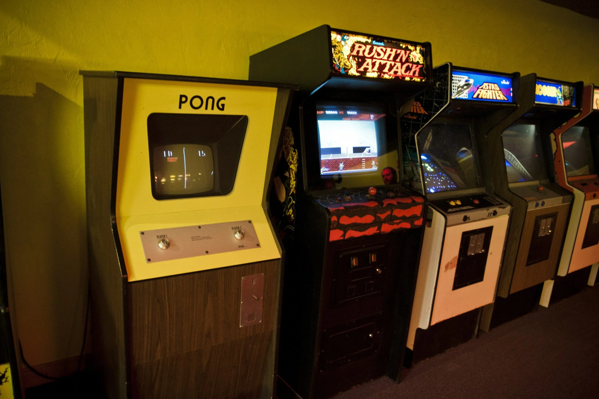
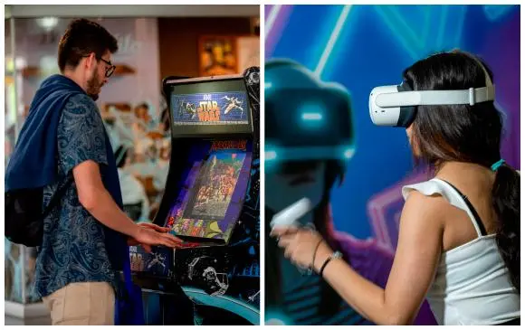

Los videojuegos arcade representaron el inicio de la cultura gamer en los años 70 y 80.

Títulos que definieron generaciones enteras de jugadores.
Desde los primeros píxeles hasta los combos más complejos.
El rey indiscutible de las "maquinitas".
Detalles técnicos sobre las placas de video de la época.
Hoy en día, el espíritu arcade vive en los juegos indie y colecciones retro.

¿Quieres probar un clásico? ¡Juega Pac-Man aquí!